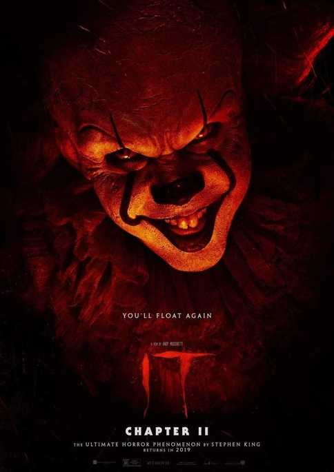
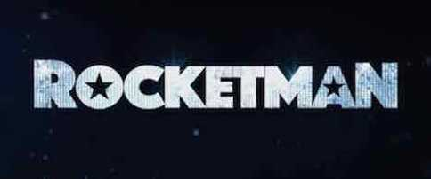
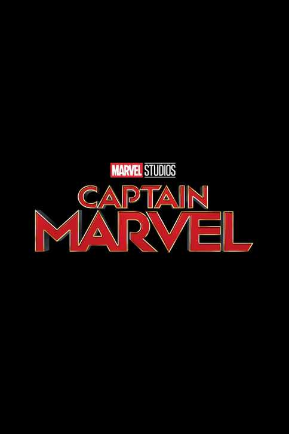

Minion Potter is the funniest scary movie that kid love to watch. The new animation that release on this week
1. IT: Chapter 2

Because every 27 years evil revisits the town of Derry, Maine, it chapter two brings the chapters - who've long since gone their separate ways - back together as adults, nearly three decades after the events of the first film.
IT: Chapter 2
2. Rocketman

Much like the man himself, Rocketman is a larger-than-life movie musical spectacle that tells the story of a child prodigy turned music legend. Elton will re-record many of his iconic hits to parallel the emotional beats of the film that will have audiences on their feet, singing along to his much loved music. The film is scheduled to shoot in fall 2014.
Rocketman
3. Captain Marvel

Captain Marvel is an upcoming motion picture set in the Marvel Cinematic Universe, the twentieth movie installment in the Marvel movie timeline, as well as the eighth installment of Marvel Phase
Captain Marvel